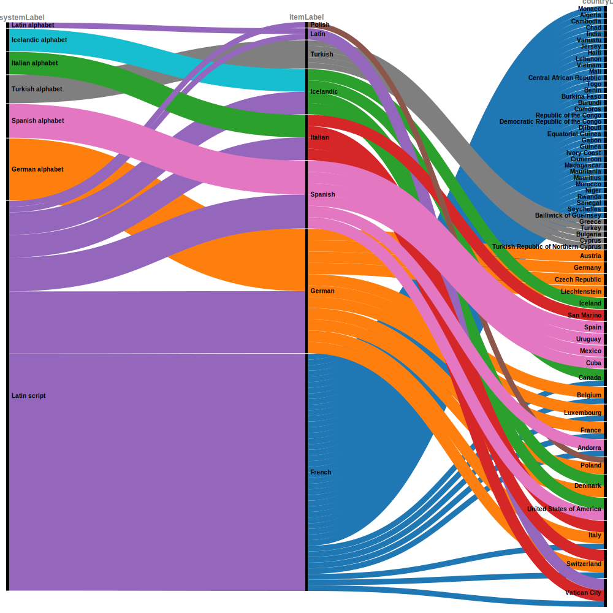

Be aware the queries in this page are quite large and can take some time to appear!
You may have to reload the page to get them to load correctly.
This wikidata query fetches:
All elements in this query are required to be non-null.
This is a very similar query to the above, with the added limit of 500 languages and the following optional elements shown:
Below is a visual representation of the relationship between a small set of languages, their writing system, and the country in which these languages are spoken. The initial data was limited to 100 entries.

item,itemLabel,country,countryLabel,writing_system,writing_systemLabel
http://www.wikidata.org/entity/Q150,French,http://www.wikidata.org/entity/Q16,Canada,http://www.wikidata.org/entity/Q8229,Latin script
http://www.wikidata.org/entity/Q150,French,http://www.wikidata.org/entity/Q31,Belgium,http://www.wikidata.org/entity/Q8229,Latin script
http://www.wikidata.org/entity/Q150,French,http://www.wikidata.org/entity/Q32,Luxembourg,http://www.wikidata.org/entity/Q8229,Latin script
http://www.wikidata.org/entity/Q150,French,http://www.wikidata.org/entity/Q38,Italy,http://www.wikidata.org/entity/Q8229,Latin script
http://www.wikidata.org/entity/Q150,French,http://www.wikidata.org/entity/Q39,Switzerland,http://www.wikidata.org/entity/Q8229,Latin script
http://www.wikidata.org/entity/Q150,French,http://www.wikidata.org/entity/Q142,France,http://www.wikidata.org/entity/Q8229,Latin script
http://www.wikidata.org/entity/Q150,French,http://www.wikidata.org/entity/Q228,Andorra,http://www.wikidata.org/entity/Q8229,Latin script
http://www.wikidata.org/entity/Q150,French,http://www.wikidata.org/entity/Q235,Monaco,http://www.wikidata.org/entity/Q8229,Latin script
http://www.wikidata.org/entity/Q150,French,http://www.wikidata.org/entity/Q237,Vatican City,http://www.wikidata.org/entity/Q8229,Latin script
http://www.wikidata.org/entity/Q150,French,http://www.wikidata.org/entity/Q262,Algeria,http://www.wikidata.org/entity/Q8229,Latin script
http://www.wikidata.org/entity/Q150,French,http://www.wikidata.org/entity/Q424,Cambodia,http://www.wikidata.org/entity/Q8229,Latin script
http://www.wikidata.org/entity/Q150,French,http://www.wikidata.org/entity/Q657,Chad,http://www.wikidata.org/entity/Q8229,Latin script
http://www.wikidata.org/entity/Q150,French,http://www.wikidata.org/entity/Q668,India,http://www.wikidata.org/entity/Q8229,Latin script
http://www.wikidata.org/entity/Q150,French,http://www.wikidata.org/entity/Q686,Vanuatu,http://www.wikidata.org/entity/Q8229,Latin script
http://www.wikidata.org/entity/Q150,French,http://www.wikidata.org/entity/Q785,Jersey,http://www.wikidata.org/entity/Q8229,Latin script
http://www.wikidata.org/entity/Q150,French,http://www.wikidata.org/entity/Q790,Haiti,http://www.wikidata.org/entity/Q8229,Latin script
http://www.wikidata.org/entity/Q150,French,http://www.wikidata.org/entity/Q822,Lebanon,http://www.wikidata.org/entity/Q8229,Latin script
http://www.wikidata.org/entity/Q150,French,http://www.wikidata.org/entity/Q881,Vietnam,http://www.wikidata.org/entity/Q8229,Latin script
http://www.wikidata.org/entity/Q150,French,http://www.wikidata.org/entity/Q912,Mali,http://www.wikidata.org/entity/Q8229,Latin script
http://www.wikidata.org/entity/Q150,French,http://www.wikidata.org/entity/Q929,Central African Republic,http://www.wikidata.org/entity/Q8229,Latin script
http://www.wikidata.org/entity/Q150,French,http://www.wikidata.org/entity/Q945,Togo,http://www.wikidata.org/entity/Q8229,Latin script
http://www.wikidata.org/entity/Q150,French,http://www.wikidata.org/entity/Q962,Benin,http://www.wikidata.org/entity/Q8229,Latin script
http://www.wikidata.org/entity/Q150,French,http://www.wikidata.org/entity/Q965,Burkina Faso,http://www.wikidata.org/entity/Q8229,Latin script
http://www.wikidata.org/entity/Q150,French,http://www.wikidata.org/entity/Q967,Burundi,http://www.wikidata.org/entity/Q8229,Latin script
http://www.wikidata.org/entity/Q150,French,http://www.wikidata.org/entity/Q970,Comoros,http://www.wikidata.org/entity/Q8229,Latin script
http://www.wikidata.org/entity/Q150,French,http://www.wikidata.org/entity/Q971,Republic of the Congo,http://www.wikidata.org/entity/Q8229,Latin script
http://www.wikidata.org/entity/Q150,French,http://www.wikidata.org/entity/Q974,Democratic Republic of the Congo,http://www.wikidata.org/entity/Q8229,Latin script
http://www.wikidata.org/entity/Q150,French,http://www.wikidata.org/entity/Q977,Djibouti,http://www.wikidata.org/entity/Q8229,Latin script
http://www.wikidata.org/entity/Q150,French,http://www.wikidata.org/entity/Q983,Equatorial Guinea,http://www.wikidata.org/entity/Q8229,Latin script
http://www.wikidata.org/entity/Q150,French,http://www.wikidata.org/entity/Q1000,Gabon,http://www.wikidata.org/entity/Q8229,Latin script
http://www.wikidata.org/entity/Q150,French,http://www.wikidata.org/entity/Q1006,Guinea,http://www.wikidata.org/entity/Q8229,Latin script
http://www.wikidata.org/entity/Q150,French,http://www.wikidata.org/entity/Q1008,Ivory Coast,http://www.wikidata.org/entity/Q8229,Latin script
http://www.wikidata.org/entity/Q150,French,http://www.wikidata.org/entity/Q1009,Cameroon,http://www.wikidata.org/entity/Q8229,Latin script
http://www.wikidata.org/entity/Q150,French,http://www.wikidata.org/entity/Q1019,Madagascar,http://www.wikidata.org/entity/Q8229,Latin script
http://www.wikidata.org/entity/Q150,French,http://www.wikidata.org/entity/Q1025,Mauritania,http://www.wikidata.org/entity/Q8229,Latin script
http://www.wikidata.org/entity/Q150,French,http://www.wikidata.org/entity/Q1027,Mauritius,http://www.wikidata.org/entity/Q8229,Latin script
http://www.wikidata.org/entity/Q150,French,http://www.wikidata.org/entity/Q1028,Morocco,http://www.wikidata.org/entity/Q8229,Latin script
http://www.wikidata.org/entity/Q150,French,http://www.wikidata.org/entity/Q1032,Niger,http://www.wikidata.org/entity/Q8229,Latin script
http://www.wikidata.org/entity/Q150,French,http://www.wikidata.org/entity/Q1037,Rwanda,http://www.wikidata.org/entity/Q8229,Latin script
http://www.wikidata.org/entity/Q150,French,http://www.wikidata.org/entity/Q1041,Senegal,http://www.wikidata.org/entity/Q8229,Latin script
http://www.wikidata.org/entity/Q150,French,http://www.wikidata.org/entity/Q1042,Seychelles,http://www.wikidata.org/entity/Q8229,Latin script
http://www.wikidata.org/entity/Q150,French,http://www.wikidata.org/entity/Q25230,Bailiwick of Guernsey,http://www.wikidata.org/entity/Q8229,Latin script
http://www.wikidata.org/entity/Q188,German,http://www.wikidata.org/entity/Q31,Belgium,http://www.wikidata.org/entity/Q8229,Latin script
http://www.wikidata.org/entity/Q188,German,http://www.wikidata.org/entity/Q31,Belgium,http://www.wikidata.org/entity/Q912243,German alphabet
http://www.wikidata.org/entity/Q188,German,http://www.wikidata.org/entity/Q32,Luxembourg,http://www.wikidata.org/entity/Q8229,Latin script
http://www.wikidata.org/entity/Q188,German,http://www.wikidata.org/entity/Q32,Luxembourg,http://www.wikidata.org/entity/Q912243,German alphabet
http://www.wikidata.org/entity/Q188,German,http://www.wikidata.org/entity/Q35,Denmark,http://www.wikidata.org/entity/Q8229,Latin script
http://www.wikidata.org/entity/Q188,German,http://www.wikidata.org/entity/Q35,Denmark,http://www.wikidata.org/entity/Q912243,German alphabet
http://www.wikidata.org/entity/Q188,German,http://www.wikidata.org/entity/Q36,Poland,http://www.wikidata.org/entity/Q8229,Latin script
http://www.wikidata.org/entity/Q188,German,http://www.wikidata.org/entity/Q36,Poland,http://www.wikidata.org/entity/Q912243,German alphabet
http://www.wikidata.org/entity/Q188,German,http://www.wikidata.org/entity/Q38,Italy,http://www.wikidata.org/entity/Q8229,Latin script
http://www.wikidata.org/entity/Q188,German,http://www.wikidata.org/entity/Q38,Italy,http://www.wikidata.org/entity/Q912243,German alphabet
http://www.wikidata.org/entity/Q188,German,http://www.wikidata.org/entity/Q39,Switzerland,http://www.wikidata.org/entity/Q8229,Latin script
http://www.wikidata.org/entity/Q188,German,http://www.wikidata.org/entity/Q39,Switzerland,http://www.wikidata.org/entity/Q912243,German alphabet
http://www.wikidata.org/entity/Q188,German,http://www.wikidata.org/entity/Q40,Austria,http://www.wikidata.org/entity/Q8229,Latin script
http://www.wikidata.org/entity/Q188,German,http://www.wikidata.org/entity/Q40,Austria,http://www.wikidata.org/entity/Q912243,German alphabet
http://www.wikidata.org/entity/Q188,German,http://www.wikidata.org/entity/Q142,France,http://www.wikidata.org/entity/Q8229,Latin script
http://www.wikidata.org/entity/Q188,German,http://www.wikidata.org/entity/Q142,France,http://www.wikidata.org/entity/Q912243,German alphabet
http://www.wikidata.org/entity/Q188,German,http://www.wikidata.org/entity/Q183,Germany,http://www.wikidata.org/entity/Q8229,Latin script
http://www.wikidata.org/entity/Q188,German,http://www.wikidata.org/entity/Q183,Germany,http://www.wikidata.org/entity/Q912243,German alphabet
http://www.wikidata.org/entity/Q188,German,http://www.wikidata.org/entity/Q213,Czech Republic,http://www.wikidata.org/entity/Q8229,Latin script
http://www.wikidata.org/entity/Q188,German,http://www.wikidata.org/entity/Q213,Czech Republic,http://www.wikidata.org/entity/Q912243,German alphabet
http://www.wikidata.org/entity/Q188,German,http://www.wikidata.org/entity/Q347,Liechtenstein,http://www.wikidata.org/entity/Q8229,Latin script
http://www.wikidata.org/entity/Q188,German,http://www.wikidata.org/entity/Q347,Liechtenstein,http://www.wikidata.org/entity/Q912243,German alphabet
http://www.wikidata.org/entity/Q256,Turkish,http://www.wikidata.org/entity/Q41,Greece,http://www.wikidata.org/entity/Q637405,Turkish alphabet
http://www.wikidata.org/entity/Q256,Turkish,http://www.wikidata.org/entity/Q43,Turkey,http://www.wikidata.org/entity/Q637405,Turkish alphabet
http://www.wikidata.org/entity/Q256,Turkish,http://www.wikidata.org/entity/Q219,Bulgaria,http://www.wikidata.org/entity/Q637405,Turkish alphabet
http://www.wikidata.org/entity/Q256,Turkish,http://www.wikidata.org/entity/Q229,Cyprus,http://www.wikidata.org/entity/Q637405,Turkish alphabet
http://www.wikidata.org/entity/Q256,Turkish,http://www.wikidata.org/entity/Q23681,Turkish Republic of Northern Cyprus,http://www.wikidata.org/entity/Q637405,Turkish alphabet
http://www.wikidata.org/entity/Q294,Icelandic,http://www.wikidata.org/entity/Q16,Canada,http://www.wikidata.org/entity/Q8229,Latin script
http://www.wikidata.org/entity/Q294,Icelandic,http://www.wikidata.org/entity/Q16,Canada,http://www.wikidata.org/entity/Q372785,Icelandic alphabet
http://www.wikidata.org/entity/Q294,Icelandic,http://www.wikidata.org/entity/Q30,United States of America,http://www.wikidata.org/entity/Q8229,Latin script
http://www.wikidata.org/entity/Q294,Icelandic,http://www.wikidata.org/entity/Q30,United States of America,http://www.wikidata.org/entity/Q372785,Icelandic alphabet
http://www.wikidata.org/entity/Q294,Icelandic,http://www.wikidata.org/entity/Q35,Denmark,http://www.wikidata.org/entity/Q8229,Latin script
http://www.wikidata.org/entity/Q294,Icelandic,http://www.wikidata.org/entity/Q35,Denmark,http://www.wikidata.org/entity/Q372785,Icelandic alphabet
http://www.wikidata.org/entity/Q294,Icelandic,http://www.wikidata.org/entity/Q189,Iceland,http://www.wikidata.org/entity/Q8229,Latin script
http://www.wikidata.org/entity/Q294,Icelandic,http://www.wikidata.org/entity/Q189,Iceland,http://www.wikidata.org/entity/Q372785,Icelandic alphabet
http://www.wikidata.org/entity/Q397,Latin,http://www.wikidata.org/entity/Q237,Vatican City,http://www.wikidata.org/entity/Q8229,Latin script
http://www.wikidata.org/entity/Q397,Latin,http://www.wikidata.org/entity/Q237,Vatican City,http://www.wikidata.org/entity/Q41670,Latin alphabet
http://www.wikidata.org/entity/Q652,Italian,http://www.wikidata.org/entity/Q38,Italy,http://www.wikidata.org/entity/Q8229,Latin script
http://www.wikidata.org/entity/Q652,Italian,http://www.wikidata.org/entity/Q38,Italy,http://www.wikidata.org/entity/Q550383,Italian alphabet
http://www.wikidata.org/entity/Q652,Italian,http://www.wikidata.org/entity/Q39,Switzerland,http://www.wikidata.org/entity/Q8229,Latin script
http://www.wikidata.org/entity/Q652,Italian,http://www.wikidata.org/entity/Q39,Switzerland,http://www.wikidata.org/entity/Q550383,Italian alphabet
http://www.wikidata.org/entity/Q652,Italian,http://www.wikidata.org/entity/Q237,Vatican City,http://www.wikidata.org/entity/Q8229,Latin script
http://www.wikidata.org/entity/Q652,Italian,http://www.wikidata.org/entity/Q237,Vatican City,http://www.wikidata.org/entity/Q550383,Italian alphabet
http://www.wikidata.org/entity/Q652,Italian,http://www.wikidata.org/entity/Q238,San Marino,http://www.wikidata.org/entity/Q8229,Latin script
http://www.wikidata.org/entity/Q652,Italian,http://www.wikidata.org/entity/Q238,San Marino,http://www.wikidata.org/entity/Q550383,Italian alphabet
http://www.wikidata.org/entity/Q809,Polish,http://www.wikidata.org/entity/Q36,Poland,http://www.wikidata.org/entity/Q8229,Latin script
http://www.wikidata.org/entity/Q1321,Spanish,http://www.wikidata.org/entity/Q29,Spain,http://www.wikidata.org/entity/Q8229,Latin script
http://www.wikidata.org/entity/Q1321,Spanish,http://www.wikidata.org/entity/Q29,Spain,http://www.wikidata.org/entity/Q285126,Spanish alphabet
http://www.wikidata.org/entity/Q1321,Spanish,http://www.wikidata.org/entity/Q30,United States of America,http://www.wikidata.org/entity/Q8229,Latin script
http://www.wikidata.org/entity/Q1321,Spanish,http://www.wikidata.org/entity/Q30,United States of America,http://www.wikidata.org/entity/Q285126,Spanish alphabet
http://www.wikidata.org/entity/Q1321,Spanish,http://www.wikidata.org/entity/Q77,Uruguay,http://www.wikidata.org/entity/Q8229,Latin script
http://www.wikidata.org/entity/Q1321,Spanish,http://www.wikidata.org/entity/Q77,Uruguay,http://www.wikidata.org/entity/Q285126,Spanish alphabet
http://www.wikidata.org/entity/Q1321,Spanish,http://www.wikidata.org/entity/Q96,Mexico,http://www.wikidata.org/entity/Q8229,Latin script
http://www.wikidata.org/entity/Q1321,Spanish,http://www.wikidata.org/entity/Q96,Mexico,http://www.wikidata.org/entity/Q285126,Spanish alphabet
http://www.wikidata.org/entity/Q1321,Spanish,http://www.wikidata.org/entity/Q228,Andorra,http://www.wikidata.org/entity/Q8229,Latin script
http://www.wikidata.org/entity/Q1321,Spanish,http://www.wikidata.org/entity/Q228,Andorra,http://www.wikidata.org/entity/Q285126,Spanish alphabet
http://www.wikidata.org/entity/Q1321,Spanish,http://www.wikidata.org/entity/Q241,Cuba,http://www.wikidata.org/entity/Q8229,Latin script
http://www.wikidata.org/entity/Q1321,Spanish,http://www.wikidata.org/entity/Q241,Cuba,http://www.wikidata.org/entity/Q285126,Spanish alphabet